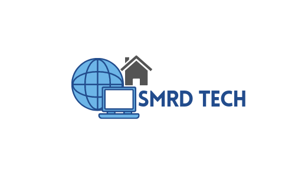
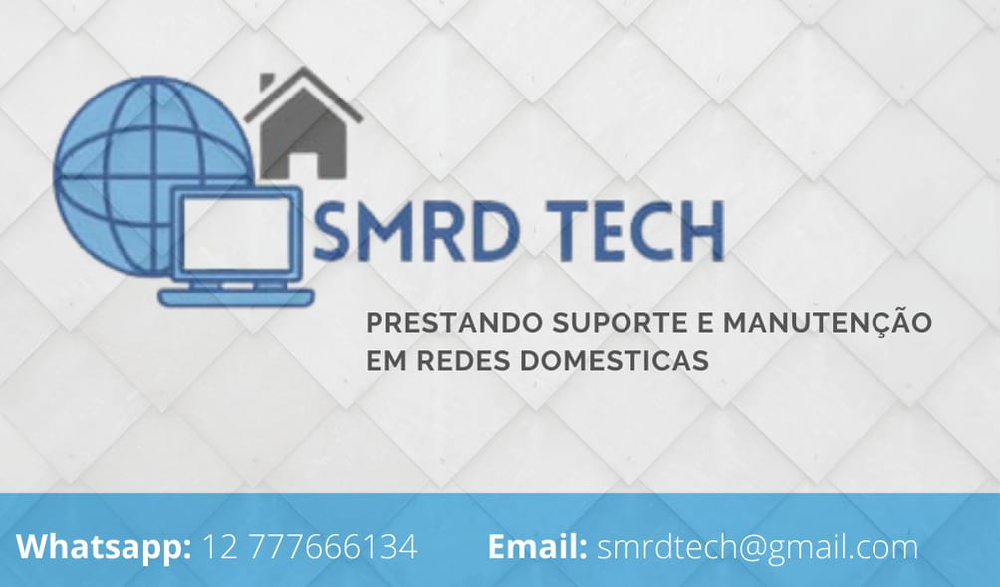
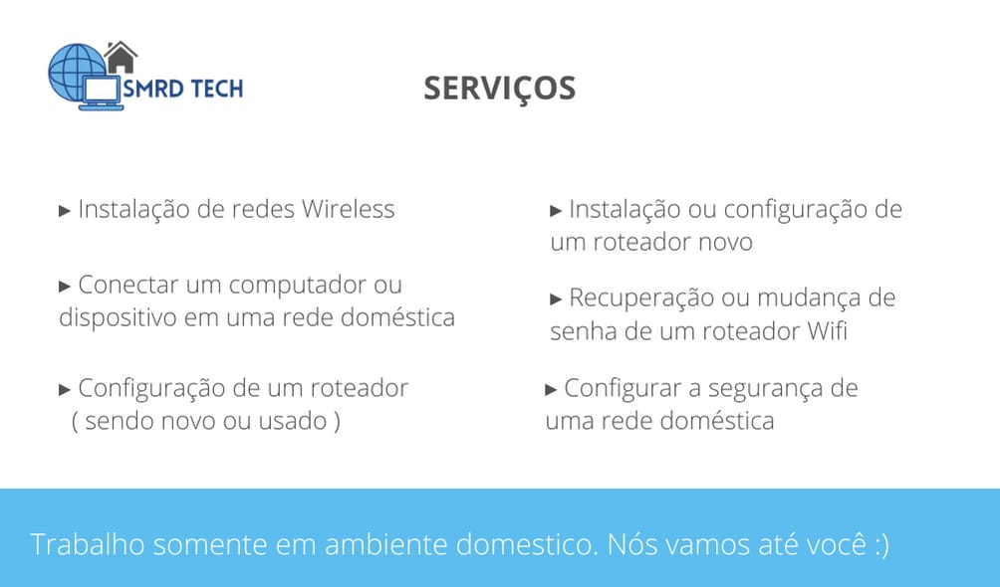

Projeto de Formação Profissional
Sobre o Pojeto
O nosso tema "Suporte e Manutenção em Redes Domesticas" está baseado em como iremos prestar serviços e manutenção em redes domésticas. O nosso objetivo é a criação de uma empresa fictícia para que possamos consolidar os conceitos de Redes de Computadores.
Desenvolvimento
Depois que chegamos a conclusão de que nós iriamos simular uma empresa, a primeira coisa que nós criamos foi o nome, seguido da logo e por fim o cartão visita. O nome SMRD Tech significa: Suporte e Manutenção em Redes Domesticas, colocamos o "Tech" no final para deixar claro que nossa empresa tem relação com tecnologia. A logo da nossa empresa foi desenvolvida de forma bastante planejada, nós pensamos em cada ícone que colocamos e cada cor que escolhemos.
Conclusão
Para a conclusão do projeto nós criamos uma apresentação Power Point explicando passo a passo a criação da empresa, na apresentação nós colocamos tudo que criamos sobre a empresa durante todo o ano de 2021, fizemos uma demonstração pratica criando uma rede wifi, nomeando ela e configurando uma senha.
←Voltar ao Portfolio